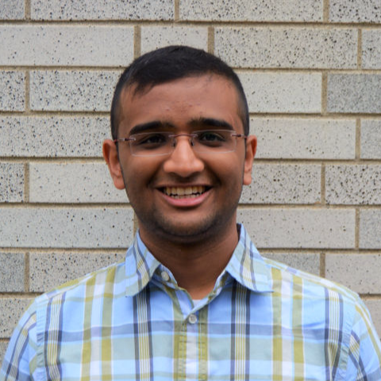
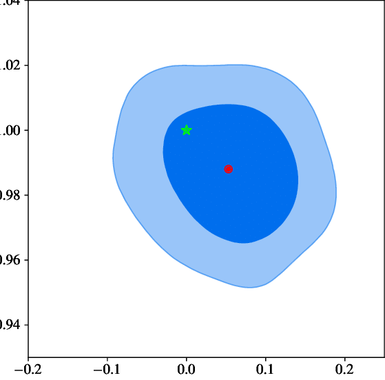
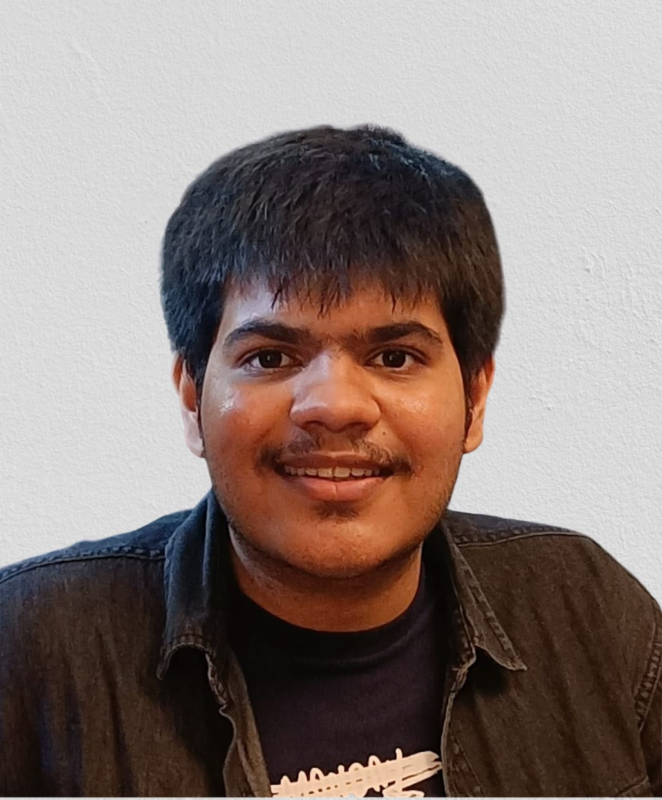
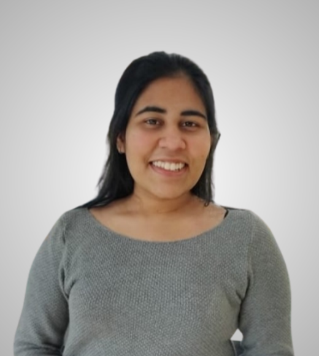
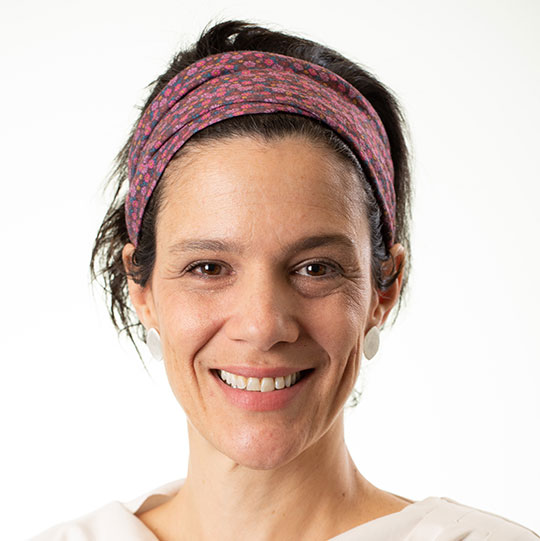
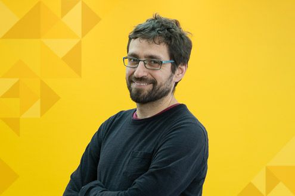

People
Principal investigator

Pavlos Protopapas
Pavlos Protopapas is Scientific Program Director at Harvard’s Institute for Applied Computational Science (SEAS), where he has taught data science and AI since 2009. He designed and teaches CS1090A/B, Harvard’s core data science sequence (about 450 and 300 students), and created AC215, Productionizing Large Language Models. His HarvardX courses have reached more than 600,000 learners.
His research spans physics-informed neural networks and scientific ML, foundation models for astronomical time series (ASTROMER), and LLMs for science at NASA’s Astrophysics Data System. He is co-author of Solving Differential Equations and Inverse Problems with AI (World Scientific, 2026).
Members
-

Shivas Jayaram
I teach deep learning courses on deploying models and building AI applications. Previously, I was co-founder and CTO of a deep learning startup.
-

Shuheng Liu
As the lead developer for NeuroDiffEq, I’m passionate about computer science, software engineering, and mathematics. In my spare time, I’m a huge fan of kayaking, cooking, rock music, and everything fun!
-
Yuqing (Lily) Pan
Uses stable diffusion, a probabilistic denoising model, to deblur images from the Event Horizon Telescope.
-
Ben Yuen
-

Hari Raval
Master of Engineering in Computational Science and Engineering at Harvard University.
-
Varshini Reddy
Candidate for a Master of Engineering in Computational Science and Engineering at Harvard University.
-

Cristobal Donoso
Applies time series analysis and deep learning to astronomy.
-

Augusto Chantada
Cosmology
-

-
Tao Tsui
-

Lakshay Chawla
Works on applications of physics-informed neural networks (PINNs) and explores how to optimize them with reinforcement learning.
-

-

Ignacio Becker
He applies AI to astrophysical problems and focuses on developing models that process real-time data from new telescopes.
-

Anshika Gupta
She is a deep learning enthusiast and a graduate of JECRC University, Jaipur. As a research intern at Neos HealthTech, she developed algorithms for medical image analysis and segmentation.
-

-
David Loving
Collaborators
-

Raul Jimenez
-
Francisco Förster
-
Raphael Pellegrin
-

-

Susana Landau
-

-

-

Spiros Mancoridis
-

Haitz Ocariz
Alumni
-

-

Marios Mattheakis
I am passionate about physics, deep neural networks, and boxing. Other than that, I am normal.
-
Blake